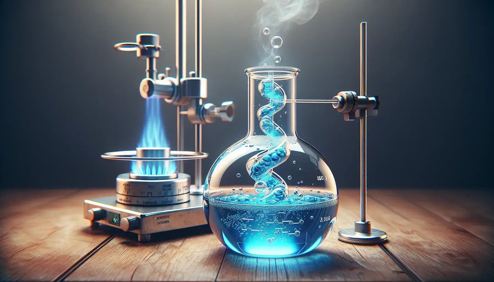
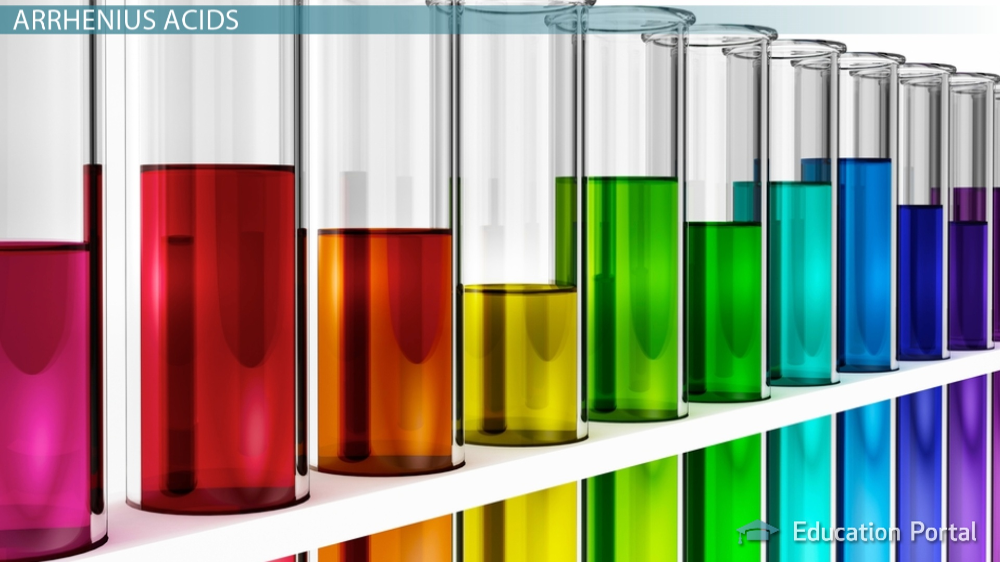
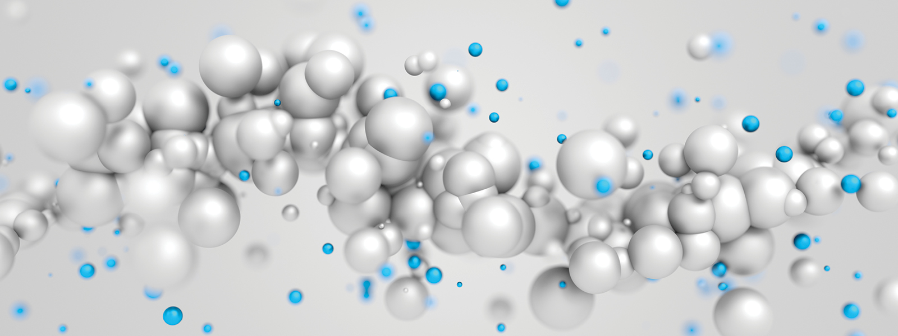
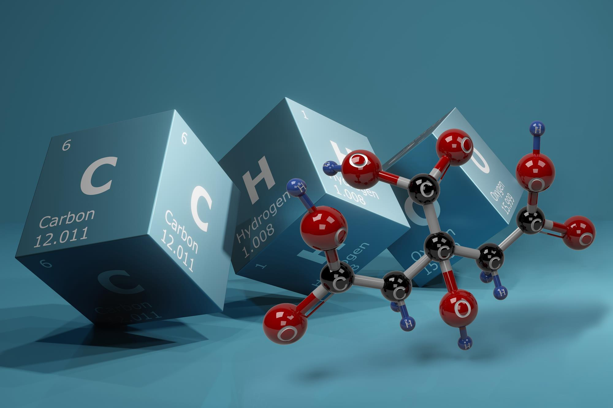
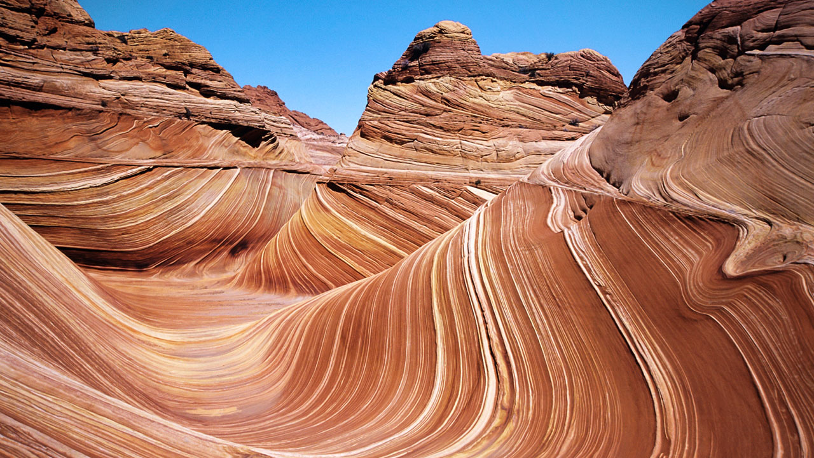

State the meaning of sieving and filtering.
Describe and identify mixtures.
Describe how insoluble solids can be separated from a liquid.
Classify mixtures.
Describe what is seen when a solid dissolves.
State the meaning of soluble, solution, solvent and solute.
Describe how some solids can be used to form a solution and what is meant by a saturated solution.
Identify the solute and solvent in a solution.
State the meaning of solubility.
Describe how temperature can affect solubility.
Identify hazards and risks.
Justify methods of risk reduction.
Plan appropriate safety precautions in experiments.
Describe how soluble solids can be separated from a solution.
Describe the difference between evaporation and boiling.
Describe how chromatography can be used to separate mixtures.
Explain how chromatography works.
Describe how distillation can be used to separate mixtures.
State examples of where distillation is used.
Explain how distillation works.
Use a knowledge of separation techniques to decide how a mixture should be separated.
Justify a decision to separate a mixture in a certain way.

Name something that is an acid.
Name something that is an alkali.
Recall why some chemicals have hazard symbols.
Recognise the common hazards and hazard symbols.
Explain why hazard symbols are necessary.
Recall the names of at least two everyday acids and alkalis.
Describe how risks from some hazards can be reduced.
Plan a safe investigation.
Explain the safety precautions that need to be taken when carrying out an investigation.
Describe how indicators can be used to identify acids and alkalis.
Identify acids, alkalis and neutral solutions using litmus.
Explain why litmus is purple in neutral solutions.
Identify acids, alkalis and neutral solutions using universal indicator.
Describe the pH scale.
Describe how to measure the pH of a solution.
Recall the name of the reaction that occurs between acids and alkalis.
Explain the difference between a physical and a chemical change.
Identify the reactants and products in a word equation.
Write a word equation for a reaction.
Recall the names of the salts produced by hydrochloric, sulfuric and nitric acids.
Describe how to produce a pure solution of a salt from an acid and a base or an alkali.
Recall some uses of neutralisation.
Recall the meaning of the term base.
Explain some uses of neutralisation.

Recall some properties of materials.
Classify materials as solid, liquid or gas.
Describe the properties of the three states of matter.
Recognise that solids, liquids and gases need to be handled in different ways because of their different properties.
Identify and explain what a scientific question, hypothesis, theory, prediction and observation are.
Make a prediction that is explained using scientific knowledge.
Describe how evidence and observations are used to develop a hypothesis into a theory.
Explain how evidence and observations support or do not support a certain theory.
Recall that all materials are made out of tiny particles.
Identify solids, liquids and gases from descriptions and particle diagrams.
Use particle theory to explain the basic properties of solids, liquids and gases.
Suggest explanations for observations using particle theory.
Draw particle diagrams to describe solids, liquids and gases.
Describe Brownian motion.
State where Brownian motion can be observed.
Use particle theory to explain how Brownian motion occurs.
State what is meant by diffusion.
Recall some everyday examples of diffusion.
Use particle theory to explain how diffusion occurs.
State what is meant by gas pressure.
Recognise some effects of gas pressure.
Use particle theory to explain gas pressure.
Describe how gas pressure can be changed.

Identify and draw tables, pie charts, bar charts and scatter graphs.
Interpret tables, pie charts, bar charts and scatter graphs.
Identify the difference between qualitative and quantitative data.
Describe the benefits of organising data in particular ways.
State what is meant by an element and recall some examples.
Describe the difference between elements and compounds by their properties.
Use particle diagrams to describe the difference between atoms and molecules.
State the proportions of different gases in the air.
Use particle diagrams to describe the difference between elements, compounds and mixtures.
Use diagrams to explain the difference between a mixture of elements and a compound.
Describe the properties of two elements and link them to their uses.
Represent elements using chemical symbols.
Explain why some elements are found in their native states and have been known about for a long time.
Describe two advantages of recycling materials.
Identify different metal and non-metal elements.
Use evidence to classify a material as a metal or non-metal.
State what happens in all chemical reactions.
Describe how elements can be changed into compounds.
Describe how a compound and its elements properties are different.
Use the chemical names for different 2- and 3-element compounds.
Recall examples of chemical reactions in everyday life.
Write word equations to describe chemical reactions and identify the products and reactants in the reactions.
Identify and describe what happens in thermal decomposition reactions.
Explain the different ways energy can play a part in some reactions.

Recall some uses for rocks.
State what minerals are.
Describe the textures of some rocks.
Explain why some rocks are porous.
Relate features of a landscape to the wearing away of different rocks.
Name some igneous rocks and describe how igneous rocks are formed.
Explain how the crystal size in igneous rocks depends on cooling rate.
Explain where you might find igneous rocks with small or large crystals.
Name some metamorphic rocks and describe how metamorphic rocks are formed.
Describe the textures and properties of igneous and metamorphic rocks.
Explain how the three types of weathering break up rocks.
Recall how weathered rocks are eroded and abraded.
Explain why different rock fragment sizes are carried by water and wind.
Describe the textures and properties of sedimentary rocks.
Name some sedimentary rocks and describe how sedimentary rocks and fossils are formed.
Use the rock cycle model to link the formation of different types of rock.
Describe how the scientific method is used for sciences such as geology.
Recall that some metals are found in their native states.
Recall how metals are extracted from ores taken from the Earth s crust.
Explain the advantages of recycling metals.
Describe some of the environmental effects of mining.